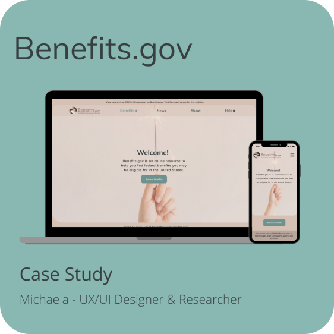
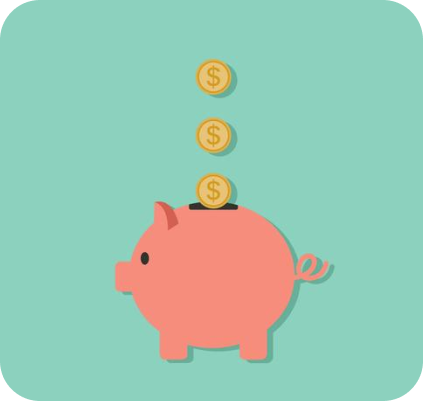
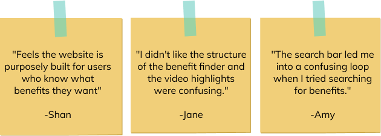
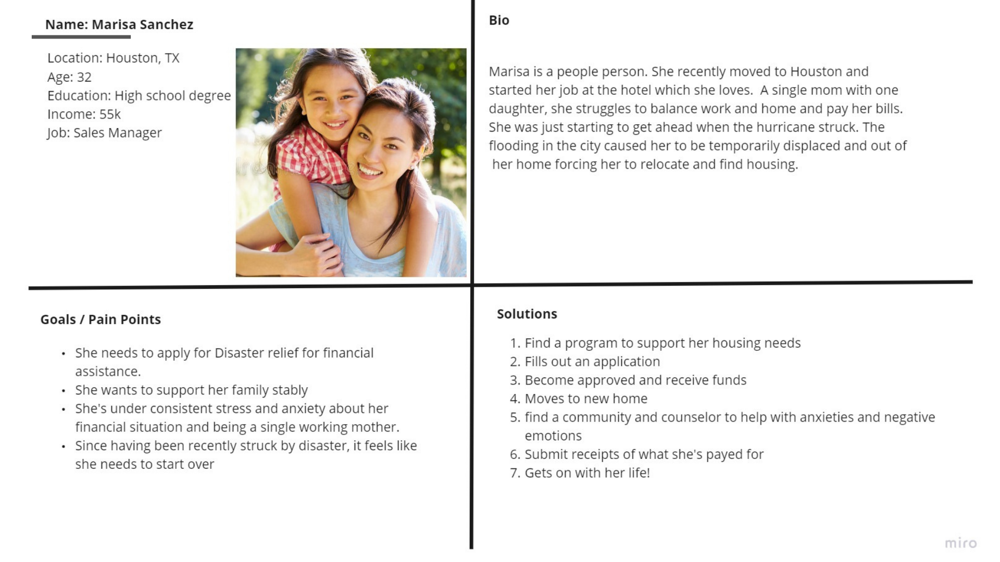
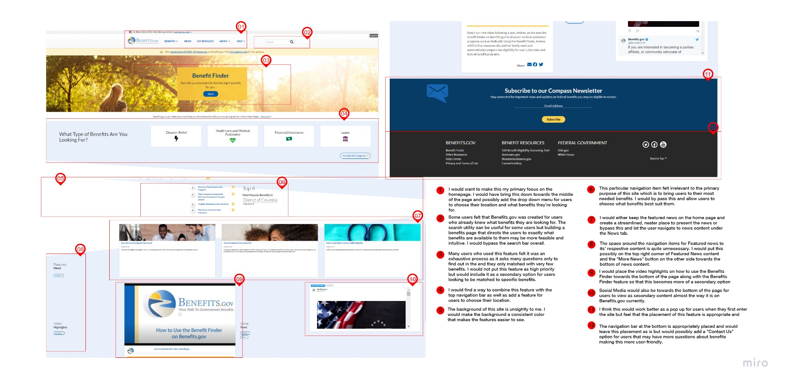
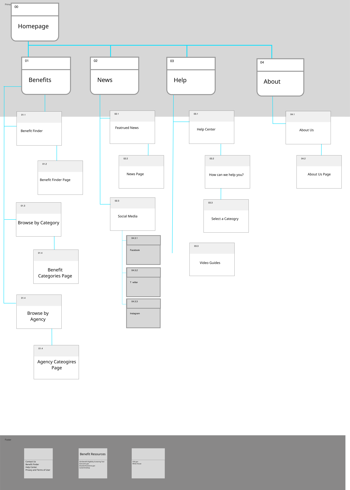
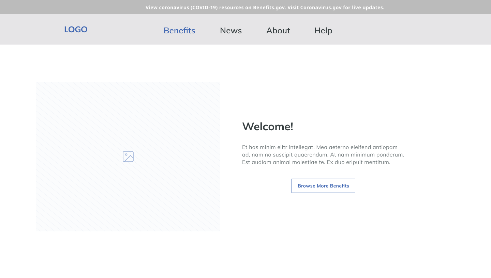
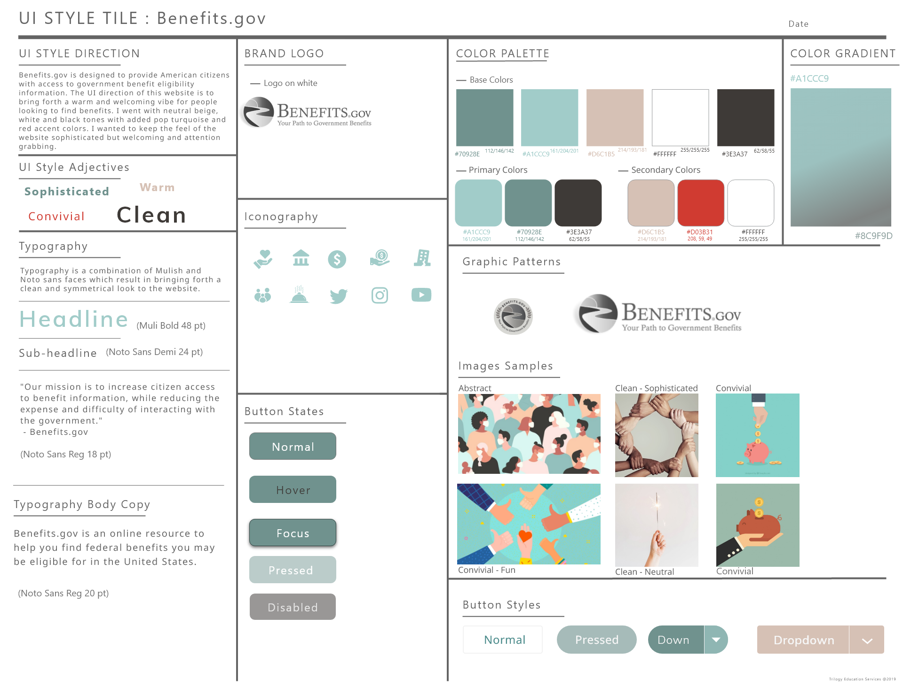

About The Project
This project is a website and mobile redesign for Benefits.gov, which is designed to provide American citizens with access to government benefit eligibility information.
Challenge
The current website contains cluttered navigation and does not do well in its usage of white space resulting in users having an unpleasant experience when navigating the website.
Research
User Interviews
To test the navigation with users I created a usability test with 3 essential tasks.
What did I find?
-
Users found the purpose of the website was clear.
-
Some users navigated to the search bar when looking for certain benefits but were overwhelmed by the information shown on the search results page.
-
Users found that some of the navigation stretched beyond the mobile screen making it difficult for users to tap on items they were looking for.

What the user is saying...

Proto Persona

I came up with a proto-persona and ideated some pain points, goals, and solutions. My goal is to redesign the page based on the user flow of our user.
Heuristic Evaluation
 I reviewed the usability methods of Benefits.gov and completed the Heuristic evaluation by following the path of our proto persona.
Most heuristics as well as the color accessibility test failed.
My goal is to recreate a cleaner design with emphasis on a filtered experience that makes the process more feasible and attractive for the user.
I reviewed the usability methods of Benefits.gov and completed the Heuristic evaluation by following the path of our proto persona.
Most heuristics as well as the color accessibility test failed.
My goal is to recreate a cleaner design with emphasis on a filtered experience that makes the process more feasible and attractive for the user.
Redline Annotation

I redlined many areas within the homepage to map out areas based on the testing results I recieved from different user points.
Card Sorting & Sitemap

I separated primary and secondary navigation items into cards and sorted them into new categories. I wanted to play close attention to information architecture while elimnating navigation items that were no longer necessary based on my research findings.

After I grouped the primary and secondary navigation I organized the items into a sitemap while also focusing on Hierarchy.
The main reason users navigate this website is to find eligible benefits which is why I made this the most primary item.
Design Phase
Low Fidelity Wireframes
I Started my design process with low fidelity, digital, wireframes. I always felt it was easiest to start with digital tools to build out the blueprint using Miro or Figma.
What changes did I make?

-
Users are able to get a better understanding of Benefits.gov on the homepage.
-
Clear description about the organization.
-
Better usage of white space.
-
A clean interface with streamlined navigation that is easy to read.
For the homepage I wanted to utilize a good proportion of white space while keeping the design clean and organized.
Final UI Design
Look & Feel
I felt that a neutral and clean design would be more fitting for this website. I got inspired by the muted designs and color schemes we see today.

Government websites tend to be bland with not much of a color scheme. I liked the idea of keeping the design clean with teal accented buttons and a warm sandy interface.
 Desktop Prototype
Desktop Prototype
 Mobile Prototype
Mobile Prototype
What have I learned from this project?
The smallest details in UX can make a huge difference in a user’s experience. I learned so much when it comes to annotating different elements based on usability and visability standards, how to apply interaction states such as hover and disabled states, and the usage of style guides. I also learned the importance of Information Architecure based on what is most intrinsic to the purpose of a website and understanding how users find information on a webpage.
I really enjoyed the ideation process and loved dissecting the navigation. This experience provided me with a better understanding of the best usability practices for the everyday user when it comes to responsive web design. I look forward to utilizing these techniques on projects in the future!
Thanks for reading!